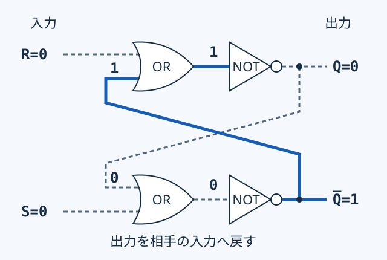
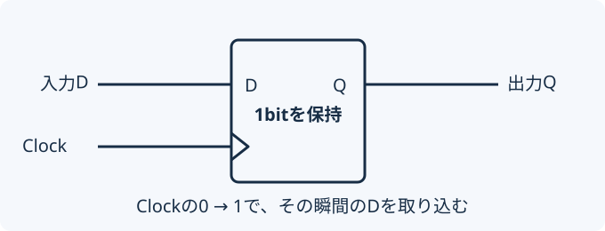

このページで学ぶこと
- 論理ゲートをつないで計算する仕組みを説明できる。
- 半加算器の一の位と桁上がりを区別できる。
- 出力を入力へ戻すと、なぜ1bitを保持できるか説明できる。
- RSラッチとDフリップフロップの取り込み方を区別できる。
- Dフリップフロップが値を取り込む瞬間を、タイミングチャートで読める。
1.まずイメージを掴む
Lesson 02の論理ゲートをつなぐと、もっと大きな処理を作れます。例えば1と1を足すと、2進数では10です。「一の位は0」「次の桁へ1を送る」という2つの結果が必要になります。
計算する仕組みと、覚える仕組み
計算：今の入力から結果を決める。入力を変えると出力も変わる。
記憶：取り込んだ値を保持する。入力を変えても、すぐには出力が変わらない。
コンピュータは、計算する回路と覚える回路を組み合わせて動きます。
2.仕組みを理解する
半加算器：1bit同士の足し算を2つのゲートで作る
半加算器は、AとBの2つのbitを足す回路です。一の位SはXOR、桁上がりCはANDで求めます。前の桁から来る桁上がりの入力は扱いません。
| A | B | S 一の位 | C 桁上がり |
|---|---|---|---|
| 0 | 0 | 0 | 0 |
| 0 | 1 | 1 | 0 |
| 1 | 0 | 1 | 0 |
| 1 | 1 | 0 | 1 |
2進数の結果はC、Sの順に読みます。1+1ではC=1、S=0なので10です。今の入力だけで出力が決まる回路を組合せ回路と呼びます。
覚える回路：出力を、自分たちの入力へ戻す
普通の論理ゲートは、今の入力だけで出力が決まります。ここで出力の線を、もう一方のゲートの入力へ戻すと、前の出力が次の計算にも使われます。これをフィードバックと呼びます。
先に、よく回路図で示されるRSラッチ（SRラッチ）から見てみましょう。1bitの値を保持する基本的な回路です。資料によってはRSフリップフロップと呼ばれます。このページでは、Clockを使わないラッチと、Clockの変化で取り込むDフリップフロップを区別します。
ORの後にNOTを置くと、NORになる
OR：どちらかが1なら1。NOT：0と1を反転。組み合わせたNORは、どちらかが1なら0、両方0なら1です。この1つのルールで図を読めます。

狭い画面では図を横にスクロールできます。以下の文章でも各ゲートの計算を読めます。
交差した線は、こう読む
- 右上のQを、斜めの線に沿って下のORへ戻す。
- 右下のQ̅（Qバー）を、もう1本の線で上のORへ戻す。
- 線が交差する中央には接続点の丸がないので、そこで2本はつながらない。
Qは覚えている値、Q̅は反転側の出力です。正常に落ち着いた状態では、Q=1ならQ̅=0、Q=0ならQ̅=1になります。
この図では上段にR、下段にSを置きます。SはSet（Qを1にする）、RはReset（Qを0にする）です。図によって上下が違うので、端子の位置よりも配線とQの位置を確認しましょう。半加算器のS（一の位）とは、同じ文字でも別の意味です。
1を覚えるまでの、3つの計算
S=1、R=0にしてみます。最初のQが0でも1でも、次の状態になります。
- 下のORはS=1を受けるので1。NOTで反転し、Q̅=0。
- その0が上へ戻る。上はR=0とQ̅=0なので、ORは0。NOTでQ=1。
- Q=1が下へ戻っても、下のORは1のまま。Q=1、Q̅=0で落ち着く。
入力を0に戻しても、なぜ1が残る？
S=0、R=0に戻しても、線を流れるQ=1は消えません。下のORにその1が戻り、Q̅=0を保ちます。上では0と0を反転してQ=1を保ちます。2つの出力がお互いを支えて、同じ値が続くのです。
入力が0＝出力も0、ではありません。S=R=0は「0を書き込む」ではなく「前の値を保持する」です。前にQ=0を書いた場合は0、前に1を書いた場合は1が残ります。
| S | R | Q | 意味 |
|---|---|---|---|
| 0 | 0 | 前の値 | 保持 |
| 1 | 0 | 1 | セット |
| 0 | 1 | 0 | リセット |
| 1 | 1 | 0（Q̅も0） | 禁止入力 |
S=R=1では両方のNOR出力が0になり、反対の値になりません。両入力を同時に0へ戻すと、どちらが先に変わるかで結果が変わり、保持する値を保証できません。通常の書込みには使いません。NAND型では入力の働きが異なるため、この表をそのまま使わないでください。
次に、Clockの瞬間だけ取り込むDフリップフロップへ
RSラッチにはClockがなく、SやRで値を書き換えます。一方、CPUなどでは「いつ書き込むか」を揃えることも必要です。そこで、Clockの変化する瞬間だけ値を取り込む回路を考えます。
前の状態も出力に関係する回路を順序回路と呼びます。ラッチもフリップフロップもその仲間です。下のD-FFの箱は外から見た動作の記号で、上のRSラッチそのものを表す図ではありません。
ここでは、入力Dと出力Qを持つDフリップフロップ（図中ではD-FF）を使います。Clock（クロック）は、値を取り込むタイミングを知らせる信号です。

- Clockが0 → 1：その瞬間のDをQへ取り込む。これを「立上り」と呼ぶ。
- Clockが1 → 0：この型では取り込まない。これを「立下り」と呼ぶ。
- Clockが変わらない：Dが変わっても、Qは以前の値を保持する。
Clockが1である間ずっと入力を通すわけではありません。「1になった瞬間」と「1のまま」を区別しましょう。
3.触ってみる
半加算器の次に、交差した回路で値を保持する様子を確かめ、最後にDフリップフロップを動かします。
Lab 1：2つのゲートで足し算する
予想：A=1、B=1のとき、一の位Sと桁上がりCはどうなるでしょうか？
実線は1、破線は0。AとBはそれぞれ、XORとANDの両方へ届きます。線の交差には接続点がなく、別の信号です。
Lab 2：交差した回路で、1を覚える
予想：1を書き込んだ後でSもRも0にすると、Qは0に戻るでしょうか？
まず「1を書き込む」、次に「入力を0に戻す」を押してください。右の出力から交差した線をたどり、OR→NOTの計算を下の説明と照らし合わせましょう。
実線は1、破線は0。数値でも表示します。Q̅は「Qバー」と読みます。出力の分岐点には丸、中央の交差点には丸がありません。
同じ入力で、違う値が残ることを確かめる
- 「1を書き込む」→「入力を0に戻す」。S=R=0でもQ=1。
- 「0を書き込む」→「入力を0に戻す」。同じS=R=0でもQ=0。
- どちらの場合も、戻り線がORにどの値を届けるか説明する。
禁止入力（S=R=1）も確かめる
両方の出力が0になります。その後、両入力を同時に0へ戻したときの値は保証できません。Labでは不定を「?」と表示し、1または0を書き込むと再び値を確定できます。
初期状態は実験用にQ=0、Q̅=1と仮定します。図は入力変更後に落ち着いた結果を表示します。説明の計算順は理解のための順序で、実際の伝搬時間や電源投入時の状態を再現しません。
Lab 3：Clockで取り込む瞬間と、保持を確かめる
予想：Q=1を保持しているとき、Dだけを0にするとQも0になるでしょうか？
操作と値の変化を読む
上が1、下が0。縦の点線はClockの立上りです。横軸は操作順で、実時間やClockの周波数は表しません。
| 番号 | 操作 | D | Clock | Q |
|---|
この順番で確かめよう
- Dを1にする。Qは0のままか確認する。
- Clockを0から1へ。Qに1が取り込まれるか確認する。
- Clockが1のままDを0へ。Qが1を保持するか確認する。
- Clockを1から0へ。まだQが1のままか確認する。
- もう一度Clockを0から1へ。今度はQが0になるか確認する。
このLabは理想化した動作モデルです。実験の初期値はQ=0に固定し、実際の回路の電源投入時の状態や信号の遅延は再現していません。
4.試験ではこう問われる
回路は、途中の出力を順に求める
ゲートの出力が別のゲートの入力になっている場合は、手前から1つずつ計算します。例えばY = NOT (A AND B)なら、まずANDの結果を求め、それを反転します。
交差した回路は、入力1の側から読む
- OR+NOT（NOR）か、AND+NOT（NAND）かを確認する。
- NOR型なら、入力1を受ける側の出力は必ず0になる。
- その0を戻り線に沿って、反対側へ届けて計算する。
- 入力が両方0のときは、前のQを確認する。前の値が不明なら、0か1かは決められない。
「交差している＝つながっている」とは限りません。接続点の丸と、出力端子Q・Q̅の位置を確かめましょう。
タイミングチャートは、Clockの立上りを先に探す
- 問題文から、立上り型か立下り型かを確認する。
- 取り込む瞬間の入力Dを読む。
- その値を次の取り込みまでQとして保持する。
入力の変化だけでQを変えない：Dが0になっても、取り込む瞬間が来るまでは前のQが続きます。
フリップフロップを複数まとめると、複数bitを保持するレジスタを作れます。次のCPUの教材では、計算の途中の値を保持する役割につながります。
5.確認問題
全4問です。答え合わせの後に理由を読み、理解を確かめましょう。
教材用のオリジナル問題です。4問すべて回答すると直近の成績を記録します。
0 / 4問回答
学習を振り返る
交差した線を指しながら、S=R=0でも前のQが残る理由を説明できそうでしょうか。RSラッチの書込みと、DフリップフロップのClockでの取込みの違いも確かめてください。
理解できたら学習完了を記録してください。確認問題の全問正解は条件ではありません。いつでも未完了に戻せます。